Summe, Mittelwert, Maximum: Funktionen verstehen – Arbeitsheft mit Lösungen (IT 6/7, Realschule)
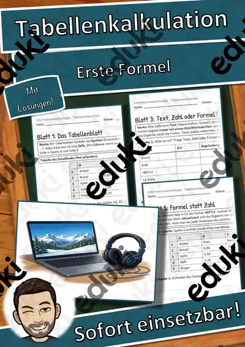
Tabellenkalkulation: erste Tabelle, erste Formel – Arbeitsheft mit Lösungen (IT 6/7, Realschule)
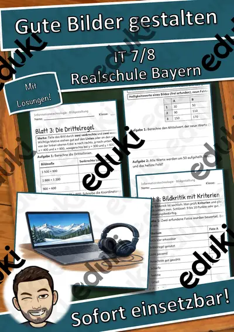
Gute Bilder gestalten: Aufbau und Wirkung – Arbeitsheft mit Lösungen (IT 7/8, Realschule Bayern)

Körperhaltung Lückentext mit Wortspeicher Hörverstehen und Suchsel

Kirchenjahr Lückentext mit Wortspeicher Hörverstehen und Suchsel

Bilder, Textfelder und Schriftzüge im Dokument – Arbeitsheft mit Lösungen (IT 6/7, Realschule)

Textverarbeitung festigen: Abschlussaufgabe – Arbeitsheft mit Lösungen (IT 6/7, Realschule Bayern)

Pixel- oder Vektorgrafik: Grafikarten im Vergleich – Arbeitsheft mit Lösungen (IT 6/7, Realschule)

Josef und seine Brüder Lückentext mit Wortspeicher Hörverstehen und Suchsel

Hoffnung auf Vollendung Lückentext mit Wortspeicher Hörverstehen und Suchsel

Tabellen im Textdokument gestalten – Arbeitsheft mit Lösungen (IT 6/7, Realschule Bayern)

Ebenentechnik für Einsteiger – Arbeitsheft mit Lösungen (IT 6/7, Realschule Bayern)
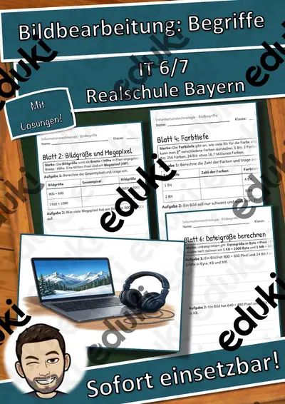
Bildbearbeitung: wichtige Begriffe – Arbeitsheft mit Lösungen (IT 6/7, Realschule Bayern)

Bildbearbeitung mit GIMP: Grundlagen – Arbeitsheft mit Lösungen (IT 7/8, Realschule Bayern)
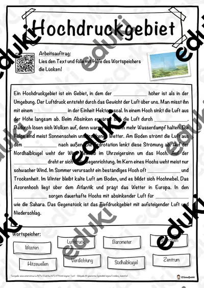
Hochdruckgebiet Lückentext mit Wortspeicher Hörverstehen und Suchsel

Himmelfahrt Lückentext mit Wortspeicher Hörverstehen und Suchsel

Bildbearbeitung_GIMP_Grundlagen_IT7_8
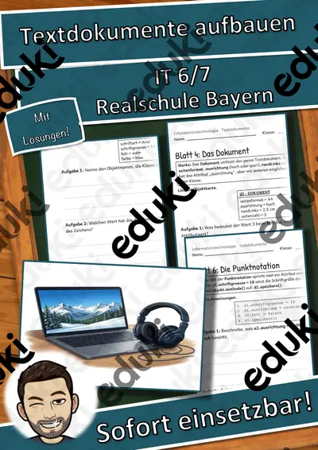
Textdokumente aufbauen: Zeichen, Absatz, Seite – Arbeitsheft mit Lösungen (IT 6/7, Realschule)

Programmierprojekt: ein kleines Spiel – Arbeitsheft mit Lösungen (IT 6/7, Realschule Bayern)

Hell-Dunkel-Kontrast Lückentext mit Wortspeicher Hörverstehen und Suchsel
Heliozentrisches Weltbild Lückentext mit Wortspeicher Hörverstehen und Suchsel

Händigkeit Lückentext mit Wortspeicher Hörverstehen und Suchsel

Verzweigungen: wenn-dann-sonst – Arbeitsheft mit Lösungen (IT 6/7, Realschule Bayern)

Schleifen und Operatoren – Arbeitsheft mit Lösungen (IT 6/7, Realschule Bayern)

Aktivitätsdiagramm: Abläufe planen – Arbeitsheft mit Lösungen (IT 6/7, Realschule Bayern)

Gottesdienst Lückentext mit Wortspeicher Hörverstehen und Suchsel

Globaler Wandel Lückentext mit Wortspeicher Hörverstehen und Suchsel
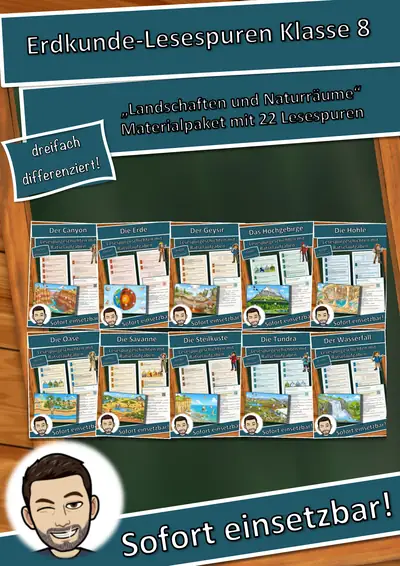
Materialpaket Lesespurgeschichten Erdkunde Klasse 8 – Landschaften und Naturräume: 22 Lesespuren mit Rätselaufgaben, dreifach differenziert
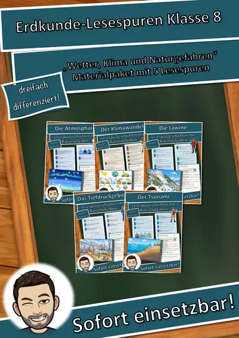
Materialpaket Lesespurgeschichten Erdkunde Klasse 8 – Wetter, Klima und Naturgefahren: 5 Lesespuren mit Rätselaufgaben, dreifach differenziert

Materialpaket Lesespurgeschichten Erdkunde Klasse 8 – Mensch, Wasser und Wirtschaft: 18 Lesespuren mit Rätselaufgaben, dreifach differenziert
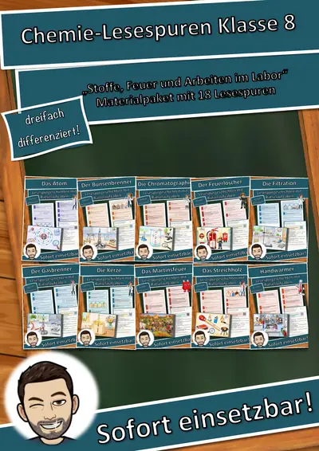
Materialpaket Lesespurgeschichten Chemie Klasse 8 – Stoffe, Feuer und Arbeiten im Labor: 18 Lesespuren mit Rätselaufgaben, dreifach differenziert

Materialpaket Lesespurgeschichten Chemie Klasse 8 – Chemie in Betrieb und Alltag: 13 Lesespuren mit Rätselaufgaben, dreifach differenziert
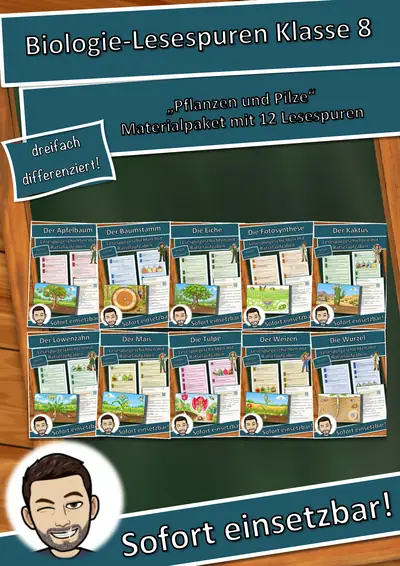
Materialpaket Lesespurgeschichten Biologie Klasse 8 – Pflanzen und Pilze: 12 Lesespuren mit Rätselaufgaben, dreifach differenziert
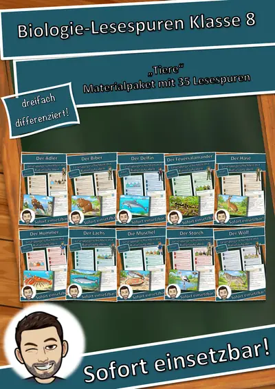
Materialpaket Lesespurgeschichten Biologie Klasse 8 – Tiere: 35 Lesespuren mit Rätselaufgaben, dreifach differenziert

Materialpaket Lesespurgeschichten Biologie Klasse 8 – Der Mensch: 18 Lesespuren mit Rätselaufgaben, dreifach differenziert
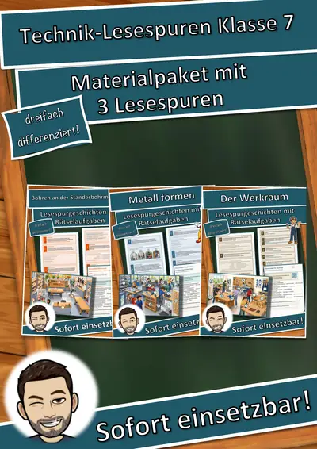
Materialpaket Lesespurgeschichten Technik Klasse 7: 3 Lesespuren mit Rätselaufgaben, dreifach differenziert

Materialpaket Lesespurgeschichten Sport Klasse 7: 7 Lesespuren mit Rätselaufgaben, dreifach differenziert

Materialpaket Lesespurgeschichten Physik Klasse 7: 6 Lesespuren mit Rätselaufgaben, dreifach differenziert
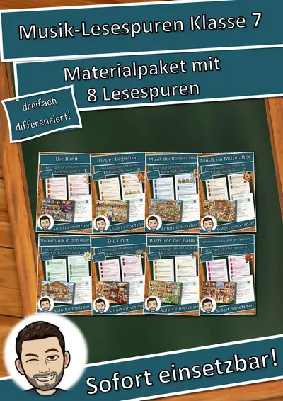
Materialpaket Lesespurgeschichten Musik Klasse 7: 8 Lesespuren mit Rätselaufgaben, dreifach differenziert

Materialpaket Lesespurgeschichten Kunst Klasse 7: 6 Lesespuren mit Rätselaufgaben, dreifach differenziert

Materialpaket Lesespurgeschichten Informatik Klasse 7: 8 Lesespuren mit Rätselaufgaben, dreifach differenziert

Materialpaket Lesespurgeschichten Hauswirtschaft Klasse 7: 3 Lesespuren mit Rätselaufgaben, dreifach differenziert

Materialpaket Lesespurgeschichten Geschichte Klasse 7: 12 Lesespuren mit Rätselaufgaben, dreifach differenziert

Materialpaket Lesespurgeschichten Ethik Klasse 7: 7 Lesespuren mit Rätselaufgaben, dreifach differenziert
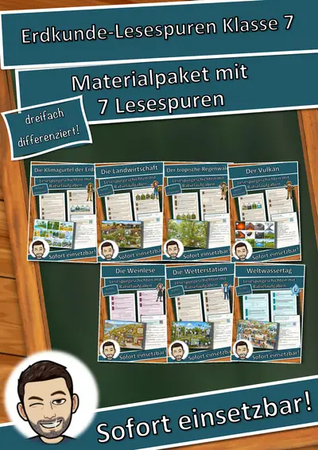
Materialpaket Lesespurgeschichten Erdkunde Klasse 7: 7 Lesespuren mit Rätselaufgaben, dreifach differenziert

Materialpaket Lesespurgeschichten Deutsch Klasse 7: 4 Lesespuren mit Rätselaufgaben, dreifach differenziert
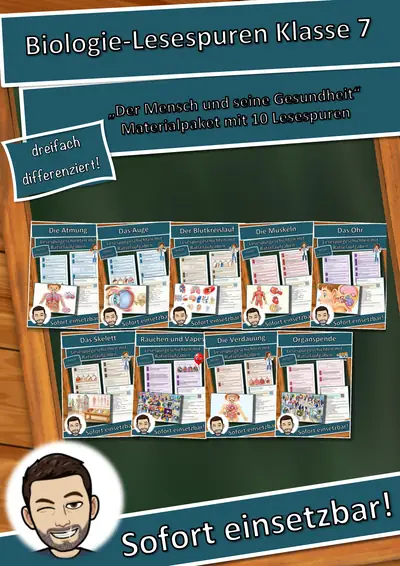
Materialpaket Lesespurgeschichten Biologie Klasse 7 – Der Mensch und seine Gesundheit: 10 Lesespuren mit Rätselaufgaben, dreifach differenziert
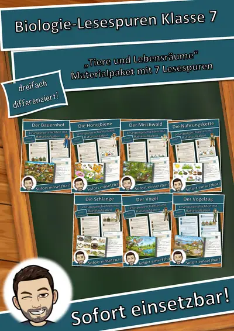
Materialpaket Lesespurgeschichten Biologie Klasse 7 – Tiere und Lebensräume: 7 Lesespuren mit Rätselaufgaben, dreifach differenziert
Keine Materialien gefunden – versuch einen anderen Suchbegriff oder Filter.